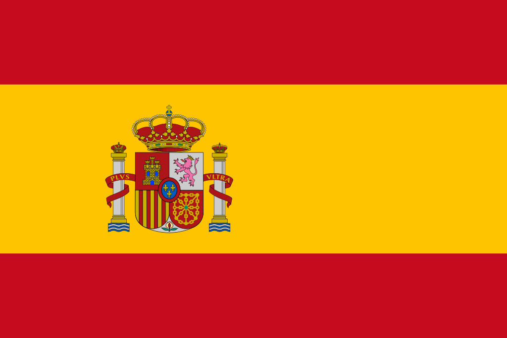
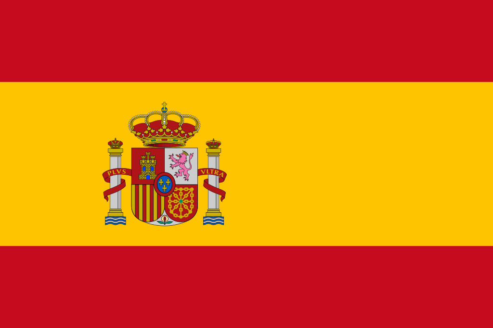

404
Hello world! My name's Daniel, but online I usually go by 404. I think it's a cool nickname, since that's my lucky number. I'm a student who has a huge amount of curiosity and who likes to learn about lots of different stuff.
Soft Skills
Soft skills are an important part of one's working efficiency. Some of the soft skills that I've come to develop throughout the years are the following ones. Have a look at them!
- Problem-solving
- Flexibility
- Teamwork
- Leadership
- Creativity

Coding Achivements
It could be argued that C++ is my native programming language, since it's the first one I started learning with a more "formal" approach, back in 2022.
As you can probably notice, I got also enough experience in HTML and CSS to make this very webpage. I haven't included too many JavaScrpit features since I still need to get to know the language better, though.

I also had a little experience with both Java and JavaScrpit beforehand. Although not enough for me to be able to use them nowadays without constantly checking their syntax. Nonetheless, no matter which programming language you use, the logic remains pretty much the same.
As for my C++ knowledge, I keep on working in getting comfortable with OOP programming. It hasn't been that hard to grasp new concepts such as pointers, but I feel I need to keep on improving until I reach the moment where it becomes second nature to me. I'd like to learn much more about both the standard library and data structures, since I feel it might prove to be useful at the end of the day.
Some of my personal C++ projects have been the following ones (Keep on mind that all of them run in the terminal, since I don't have experience either with C++ GUI programming):
- Tic-Tac-Toe Game (The user's able to interact using matrix coordinates)
- Maze Game (The user's able to interact with the WASD keys)
- Grade Calculator (The user information's saved in text files so it can be used after closing the program)
Languages I Got Knowledge Of


English
Description:
I guess there's not too much to say about it, since I've been writing this whole page in English. I feel almost as comfortable with it as with my native language.
Example:
I haven't been to any English speaking country, but I'm looking forward to it. In fact, I haven't been overseas at all...
 

Spanish
Description:
Spanish is my native language, so it comes without saying that I can speak it fluently... It's helped me a great deal to learn other european languages, such as English and French.
Example:
Hay muchos dialectos del español, debido a la alta cantidad de países hispanos que existen. Sin embargo, el lado bueno es que todos son inteligibles entre sí.


French
Description:
After learning English, I decided to get started with a romance language, since it'd come from the same family as Spanish. Soon enough I'd choose French, since, in my humble point of view, it was the most challenging option. It's been pretty easy, though!
Example:
Grâce a avoir choisi le français comme troisième langue, je peux maintenant mieux comprendre aussi le fonctionnement de l'espagnol, et l'origine de plein de mots anglais !


Portuguese
Description:
It wasn't until I had the need to learn it that I decided to do so. Back then, in an widely-known online game called Clash of Clans, I was invited to a Brazilian clan by a friend of mine. But after we stop playing, I haven't really got back to Portuguese.
Example:
Não prático muito o português, mais é uma língua muito fácil para mim, porque posso falar espanhol. Gostaria de aprender melhor outras línguas antes do português.


Japanese
Description:
Japanese is so much fun for me. It's one of the hardest major languages to learn, and it's so different to what we (speakers of european languages) are used to. Even so, it remains one of the most entertaining ones to learn, since Japan is a really big "soft power" player in the world. Japanese videogames, movies, series, comics, songs, novels... are an important part of our pop-culture and heavily influence the entire internet nowadays.
Example:
日本語で話すのは、本当に難しくて聞く時には、あまり分からないけど、アニメを見れてマンガを読めるだから、大丈夫はずがあるんだよね！
Academic Resume
Currently, I'm a college student. The major I chose is the equivalent to Computer Science & Engineering in English. It'd be translated more literally as "Informatics Engineering", though. There aren't really too many academic achivements I can talk about. But here's a list with the most important things to take into account.
- I've finished two of ten semesters in Computer Science & Engineering.
- I graduated from highschool with remarkable grades.
- I've participated in several extracurricular activities, such as MUNs, where students prove themselves capables of negotiating, working together, solving problems and giving speeches eloquently.
- I'm constantly self-studying different subjects I'm interested into.